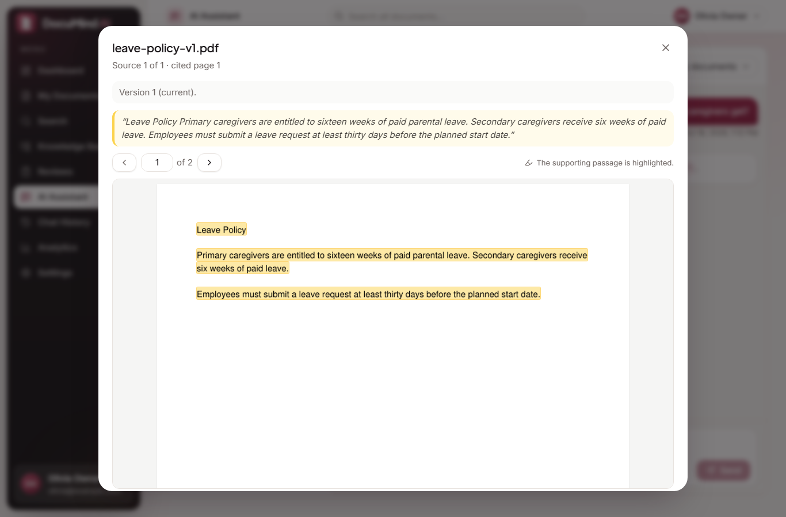
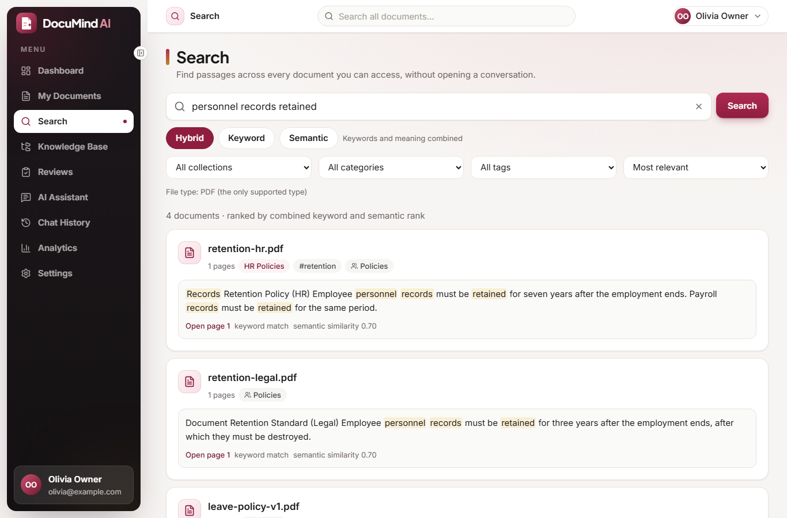
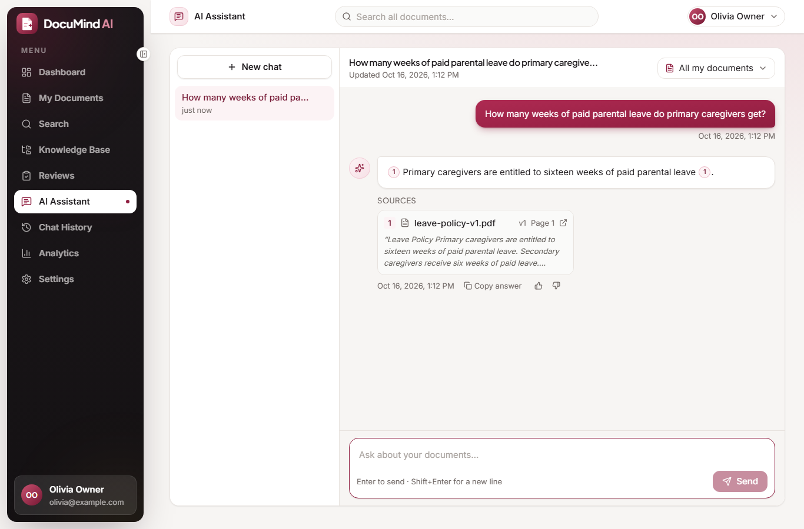
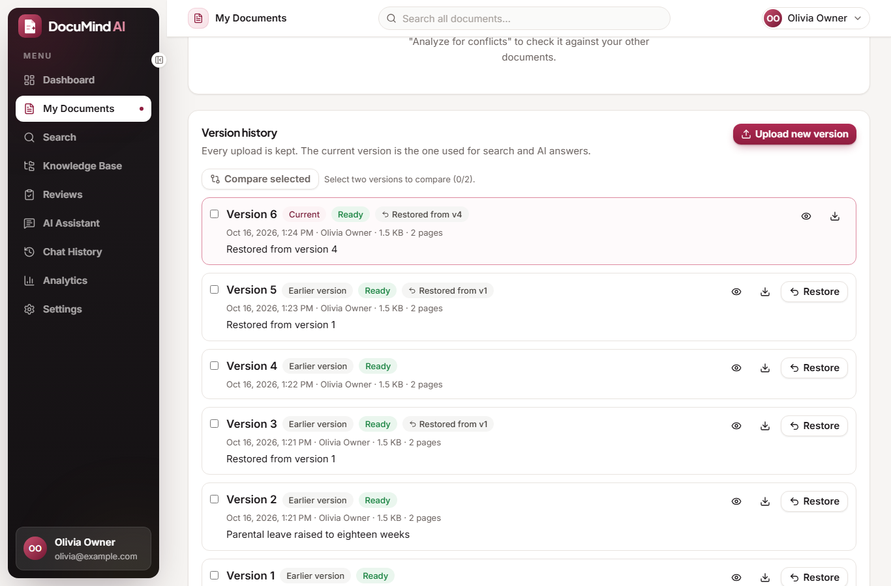
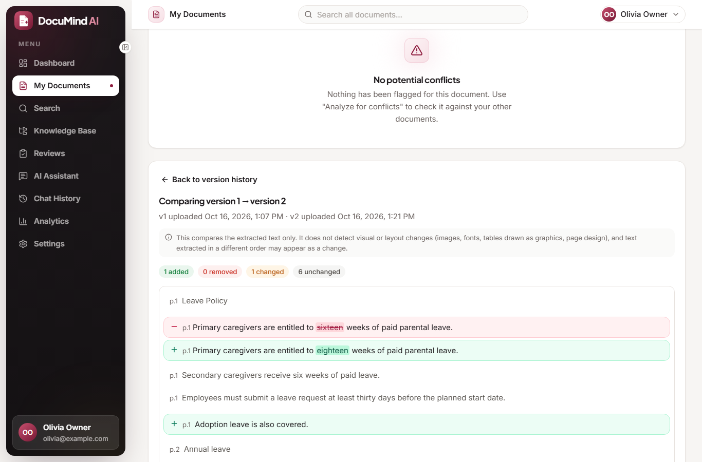
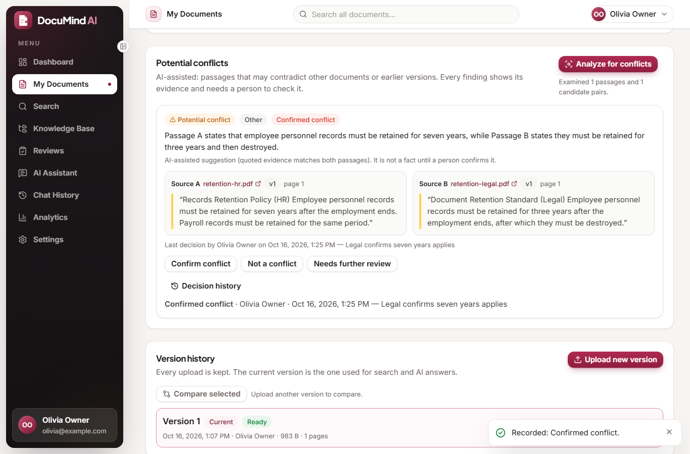
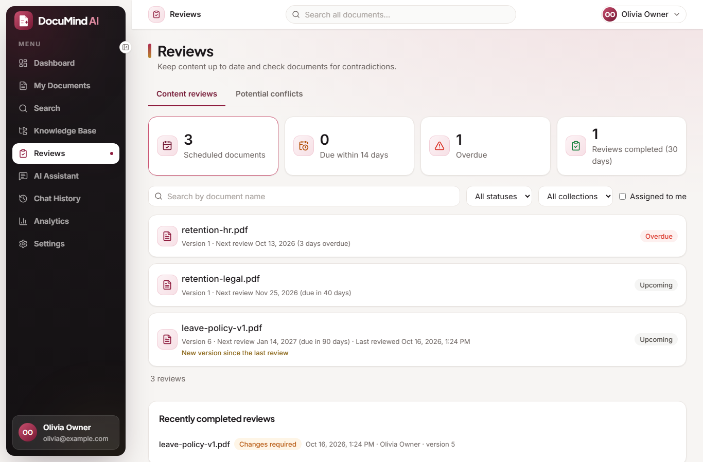
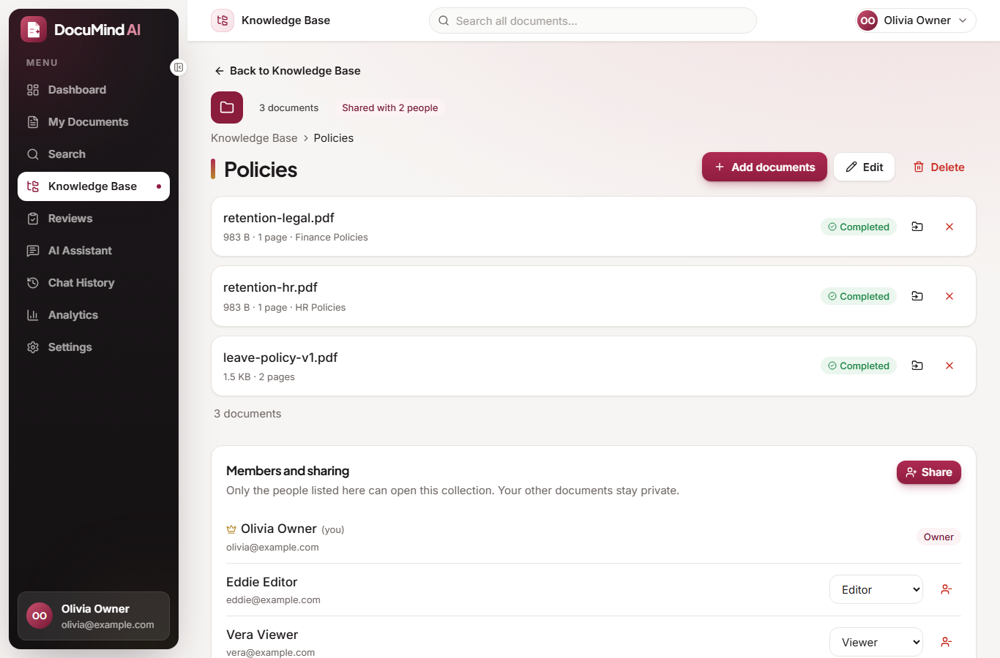
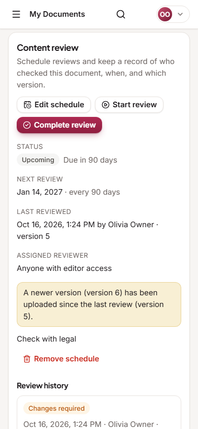

Answers you can trace back to the page.
Upload your PDFs, search them, ask questions and get cited answers that open the exact page with the passage highlighted. Share collections with a team, keep every version, schedule reviews and check documents for contradictions.
About this page: this is the project site. The application itself needs a MySQL database, a vector store and an AI model, so it runs on your own computer: see Run it. Every screenshot below is a real screenshot of the running application.

What it does
A complete workflow from a pile of PDFs to a knowledge base your team can trust.
Cited AI answers
Every answer cites its document, version and page. If the documents do not support an answer, it says so instead of guessing.
Hybrid search
Keyword (MySQL FULLTEXT) and semantic (embeddings in Chroma) results merged with reciprocal rank fusion, with filters and highlighted snippets.
Collections, categories, tags
Organize documents your way and filter by any of them.
Team sharing
Share a collection as Viewer or Editor. Permissions are enforced on the server for every request, and revoking access is immediate.
Version history
Upload new versions, compare the text, restore an old one as a new version. Search and AI only use the current version; old citations open the original file.
Content reviews
Review dates and intervals, due and overdue status derived from the dates, and a history of who reviewed which version.
Potential conflicts
The AI compares passages across documents and shows both sources as evidence. A person decides; nothing is confirmed automatically.
Reliable processing
Background jobs in a MySQL queue with progress, automatic retries and manual retry.
See it working
Screenshots from the running application (sample engineering policies).








How it works
MySQL decides who may see what; the vector index is only a search aid.
- UploadThe PDF is validated and stored; a background worker extracts, chunks, embeds and indexes it.
- AuthorizeEach request resolves the documents the user may read from MySQL before anything is retrieved.
- RetrieveChroma finds similar passages; each hit is re-checked in MySQL and must belong to the current version.
- AnswerOnly those passages go to the LLM; citations are validated against what was sent.
- OpenA citation opens the exact page; the passage is highlighted only when it was located reliably.
Permissions
Enforced by the backend on every route; hiding a button is only convenience.
| Action | Owner | Editor | Viewer |
|---|---|---|---|
| See documents, search, ask questions, open PDFs, versions, reviews, findings | Yes | Yes | Yes |
| Add own documents, edit labels, upload or restore versions, schedule reviews, run conflict analysis | Yes | Yes | No |
| Edit or delete the collection, invite, change roles, revoke members | Yes | No | No |
| Delete the uploaded file | Only the person who uploaded it | ||
Built and tested
Numbers from the test runs on the final code.
The application was also driven end to end in a real Chrome browser with a local AI model (sign-in, upload, cited answers, search, sharing, versions, reviews, conflicts, keyboard and layout checks). The results, including what failed and was fixed, are in docs/RELEASE_VERIFICATION.md.
Technology
Run it on your computer
You need Python 3.11+, Node.js 18+ and MySQL (XAMPP works). For AI answers install Ollama or use a hosted model key.
git clone https://github.com/JidnyasaGirase4/documind-ai.git cd documind-ai/backend python -m venv .venv && .venv/Scripts/activate pip install -r requirements.txt cp .env.example .env # set DATABASE_URL, JWT_SECRET_KEY, LLM_* python -m alembic upgrade head python -m uvicorn app.main:app --reload --port 8000 cd ../frontend npm install cp .env.example .env # VITE_API_BASE_URL=http://127.0.0.1:8000 npm run dev
Full instructions, configuration reference and troubleshooting are in the README.